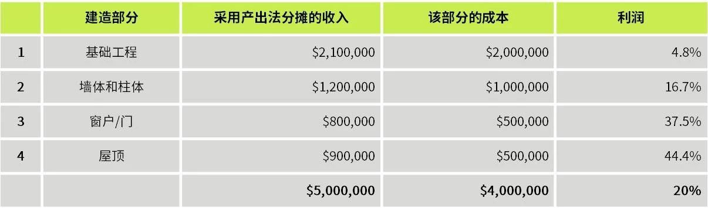

天职国际会计师事务所
新收入准则下一段时间内履行履约义务所发生成本的处理
IFRIC撤销议题选注20190708
在2019年3月的会议中，国际财务报告解释委员会（IFRIC）讨论了新收入准则下，一段时间内履行履约义务所发生成本的分摊确认问题。2019年6月，委员会对该问题作出了最终议程决议。
会议时间：2019年6月
议题：履行合同成本（《国际财务报告准则第15号——客户合同收入》）
议题概要：
委员会收到咨询，询问有关主体在一段时间内履行履约义务的合同中，因履行该合同所发生的成本的确认问题。在咨询所述案例情况（注：①）中，该主体（1）在一段时间内转移该商品的控制权（即满足《国际财务报告准则第15号》第35段的一项或多项条件），从而在一段时间内履行履约义务并确认收入；以及（2）采用《国际财务报告准则第15号》第39-43段所述的产出法对履约进度进行计量。主体在建造该商品过程中发生了成本。在报告日，向客户交付商品建造过程中，发生了与该商品建造活动相关的成本。
委员会首先强调了《国际财务报告准则第15号》有关一段时间内履行履约义务的履约进度计量原则和要求。第39段规定，“计量履约进度旨在反映主体向客户转让已承诺商品或服务的履约情况”。委员会也注意到，在评价是否采用产出法计量进度时，第B15段要求主体“应当考虑所选择的产出能否如实反映主体履约义务的履约进度”。
在考虑成本确认时，委员会强调，《国际财务报告准则第15号》第98（3）段（注：②）要求主体将“与已经履行（或部分履行）的合同中的履约义务相关的成本（即，与过往履约相关的成本)”确认为费用。
委员会注意到，咨询案例所述建造成本是与该合同已部分履行的履约义务相关成本——即与主体过往履约相关的成本。因此，这些成本并不产生或改良主体将在未来用于持续履行履约义务的资源（第95（2）段）。所以，这些成本并不满足《国际财务报告准则第15号》第95段（注：③）作为资产确认的条件。
委员会得出结论认为，国际财务报告准则的原则和要求，已为主体确定如何确认咨询案例情况所述的履行合同发生成本提供了充分基础。因此，委员会决议，不将该问题纳入其准则制定议程。
注：
①IFRIC职员在2019年3月会议中具体案例分析如下（STAFF PAPER Agenda ref 2 March 2019）：
咨询案例情况
报告主体签订合同为客户（在其自有土地上）建造房屋。该建造需3年时间完成。
根据《国际财务报告准则第15号》第35（3）段，该合同属于一段时间内履行的单项履约义务。

假设建造部分1（即基础工程）在报告期末已完成，该部分确认收入$2,100,000。该部分的总成本为$2,000,000。
问题：该$2,000,000成本是否可以部分确认为该合同其他阶段的履行成本？
观点1——所有成本在发生时确认为费用
在前述案例情况中，根据《国际财务报告准则第15号》第95(2)和98（3）段，该$2,000,000成本应确认为费用。
建造部分1所发生的成本，并非为产生或改良主体用于“未来履行履约义务”而发生的成本。相反，该成本是为履行当前履约义务而发生的成本。此外，《国际财务报告准则第15号》第98（3）段重申，与已经部分履行履约义务相关的成本，应在发生时作为费用。
观点2——所发生的部分成本可以资本化
在前述案例情况中，建造部分1（即基础工程）是继续交付不同建造部分（即，墙体和柱体、窗户/门、屋顶）所必要的。因此，建造部分1的部分成本应向尚未履行的其他部分分摊。这更能代表该合同的经济实质，该合同涉及向客户交付一项履约义务（房屋）。部分1所发生的部分成本，属于将用于履行未来部分建造的资源。将该成本分摊到部分履行义务和未来义务的方法，可以采用合同总利润。
IFRIC职员分析及结论
在咨询案例所述情况中，建造该建筑物的成本，属于第98（3）段所述的与已经履行（或部分履行）履约义务相关的成本。这些成本与已移交给客户的部分建造建筑物的建造活动有关。该成本与主体的过往履约相关。主体在该建筑物建造过程中，在一段时间内转移了该建筑物的控制权，从而在该报告日已部分履行了履约义务。因此，根据第98（3）段，在咨询案例所述情况下，主体应在这些成本发生时确认为费用。
在一段时间内履行履约义务并确认收入后，该主体已向客户交付了部分建造建筑物的控制权，从而不再拥有该资源。主体可能拥有该合同下过往履约所产生的资源（如合同资产或应收款项），但是，该主体在履行（或持续履行）未来履约义务时，将不会再使用这些资源。因此，该主体所发生的上述成本不满足《国际财务报告准则第15号》第95（2）段的条件。
IFRIC职员指出，《国际财务报告准则第15号》结论基础第BC308段解释了，第95段的要求旨在确保主体所确认的成本，仅在满足资产定义时才作为资产，并防止仅出于使合同期内利润正常化而将成本递延。第BC308段指出：
“《国际财务报告准则第15号》澄清，只有能够形成用于在未来履行履约义务的资源且预计可收回的成本才符合确认为资产的条件。这些要求确保只有符合资产定义的成本才能确认为资产，从而主体不得仅为了通过将收入和成本平均分摊至合同存续期而使整份合同的利润正常化的目的而递延成本。为就确认和计量履行合同的成本所形成的资产提供明确的目标，IASB和FASB决定，只有与合同直接相关的成本才应纳入相关资产的成本。”
IFRIC职员经上述分析，支持咨询案例所述的观点1。
②《国际财务报告准则第15号——客户合同收入》第98段：
“主体应在下列成本发生时将其确认为费用：
（1）一般管理费用（除非合同明确规定该成本可向客户收取，在这种情况下，主体应当根据第97段评价该成本）；
（2）为履行合同而发生的并未反映在合同价款中的浪费的材料、人工或其他资源的成本；
（3）与已经履行（或部分履行）的合同中的履约义务相关的成本（即，与过往履约相关的成本）；以及
（4）主体无法区分其是与未履行的履约义务相关还是与已履行（或部分履行）的履约义务相关的成本。”
③《国际财务报告准则第15号——客户合同收入》第95段：
“如果已发生的履行与客户之间的合同的成本不属于其他准则（例如，《国际会计准则第2号——存货》、《国际会计准则第16号——不动产、厂场和设备》及《国际会计准则第38号——无形资产》）的范围，主体应在因履行合同而发生的成本符合下列所有条件的情况下，将该成本确认为一项资产：
（1）该成本与一项合同或主体能够明确识别的预期合同直接相关（例如，与现有合同续约后将提供的服务相关的成本，或者尚未获得批准的特定合同下拟转让资产的设计成本）；
（2）该成本产生或改良了主体将在未来用于履行（或持续履行）履约义务的资源；以及
（3）该成本预计可收回。”
释：
本议题涉及新收入准则下，在一段时间内履行履约义务并确认收入，采用产出法计量履约进度时，已履行部分履约义务相关成本的处理。
根据IFRIC的讨论，对于一段时间内履行履约义务所发生的成本，需要关注各阶段所发生成本是否为与过往履约相关的成本，是否产生或改良了将在未来用于履行履约义务的资源。如果属于与过往履约相关的成本，则该成本很可能不会产生或改良用于未来履约义务的资源，从而不能资本化分摊到未来履行的履约义务成本中，应立即确认为费用。
IFRIC强调，《国际财务报告准则第15号》结论基础第BC308段解释了，上述要求旨在确保主体所确认的成本，仅在满足资产定义时才作为资产，并防止仅出于使合同期内利润正常化（“平滑利润”）而将成本递延。